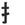

|  | handleft |
| SHU |
|
He used his hand to Show His Underpants. |
| て |
hand
★★★★★ |
| 上手 な |
skilllfully done!
★★★★☆
FP
skillfully done! Usually used to praise one's friends' efforts (at art, music, cooking, etc.) |
| 勝手 に |
to do without asking
★★★★☆
KUNKUN
to do like a dick. I mean, to do something selfishly without asking, like you're the only one on the planet. I ate MY cake, but then I かってに ate your cake too, and just look at you like, "What?" (****) |
| ＸＸＸ が 下手 |
untalented / poor
★★★★☆
FP
XXX is untalented, poorly performed, or poorly made. |
| xxxは 苦手 |
this is not my thing!
★★★☆☆
KUNKUN
this has 2 meanings. One is "I'm not good at this" and the second is "I don't like this" Clever Japanese! |
| 相手 |
partner
★★★☆☆
KUNKUN
one's partner (in conversation, tennis, or anything else however temporary) |
| 片手 で or に XXX |
one-handed
★★☆☆☆
KUNKUN
to do xxx one-handed. |
| 手作り の |
| Meaning | Hint | Radical | |
|---|---|---|---|
| 手 | hand | bottom swings LEFT | |
| 毛 | fur | bottom swings RIGHT |
The bottom of hand bends to the left, because the leper LEFT his hand back at the motel.
Much to the surprise of your mother, the maid.
The bottom of fur bends more considerably to the RIGHT, because you have to wear the RIGHT fur if you are going to impress people at the pimp show/opera.
|
bad point
苦手 欠点 弱点 欠陥 |
|
bitch, slut
ちゃらちゃら 派手 淫ら 尻軽女 ヤリマン あばずれ 糞女 |
|
gesture
身振り 手振り 痛める |
|
great, magnificent
上手 うまい 素敵 立派 素晴らしい 見事 |
|
heal
治す が癒える を癒やす 治癒 治療 医療 手当て |
|
magic
魔法 魔術 手品 魔女 魔法使い |
|
obstacle
阻害 妨害 支障 足手まとい |
|
prepare
手配 用意 準備 備える xxxしておく 覚悟 構える |
|
technique
xxxし方 xxxやり方 技術 技 手法 手段 |
|
ticket
切手 切符 チケット |
|
to support
支える 応援 支援 手伝う 援助 |
 KANJIDAMAGE
KANJIDAMAGE
 Number
294
Number
294